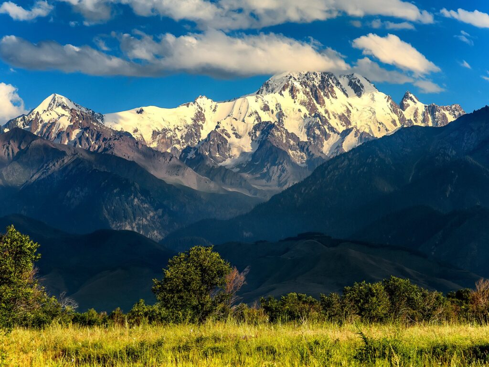

Горы — это сильно расчленённые участки земной суши, которые высоко поднимаются над прилегающими равнинами (обычно более чем на 500 метров) и имеют резко выраженные склоны, подножие и вершины. Основные характеристики гор • Высота над уровнем моря: • Низкогорья — до 800 метров. • Среднегорья — от 800 до 2500 метров. • Высокогорья — более 2500 метров. • Строение горы: состоит из подошвы (подножия), склонов, гребня и вершин (пикообразных, куполообразных или платообразных). • Происхождение: делятся на складчатые, глыбовые, вулканические, куполообразные и столовые (платообразные). • Образование: растут из-за движения тектонических плит и вулканизма, а разрушаются под воздействием ветра, воды и климата.
Горы Казахстана
Основные горные системы Казахстана занимают около 5% территории страны и сосредоточены преимущественно на юге, востоке и в центре: • Тянь-Шань (юго-восток): Крупнейшая горная система, разделенная на Северный, Западный и Центральный Тянь-Шань. Самая высокая точка на границе Казахстана, Кыргызстана и Китая — пик Хан-Тенгри (6995–7010 м), а самая высокая вершина, целиком находящаяся на территории страны — пик Талгар (4979 м) в Заилийском Алатау. Ознакомиться с маршрутами можно на портале Tripster. • Заилийский Алатау (юг): Северный хребет Тянь-Шаня, образующий живописный фон для Алматы. Здесь находятся популярный курорт «Шымбулак», каток «Медеу», Большое Алматинское озеро и плато Кок-Жайляу. При выходах на маршруты в регионе туристы могут воспользоваться системой электронной регистрации через сайт Almaty Hike для безопасности. • Алтай (северо-восток): Горная система на стыке границ Казахстана, России, Китая и Монголии. Высшая точка — гора Белуха (4506 м). В регионе расположен Катон-Карагайский национальный парк с Язевым и Рахмановским озерами. Подробности описаны в обзоре от Vpochod. • Жунгарское Алатау (северо-восток): Мощный хребет между Тянь-Шанем и Алтаем с высотами до 4560 м и крупными ледниками. Подробная категоризация объектов доступна в Википедии. • Сары-Арка / Казахский мелкосопочник (центр): Обширная низкогорная степная зона (высшая точка — гора Аксоран, 1565 м), включающая Каркаралинские и Улутауские горы. • Мугоджары (запад): Южное продолжение Уральских гор. • Мангыстауские горы (запад): Расположены на полуострове Мангыстау у Каспийского моря (включают плато Устюрт и низшую точку страны — впадину Карагие, -132 м).